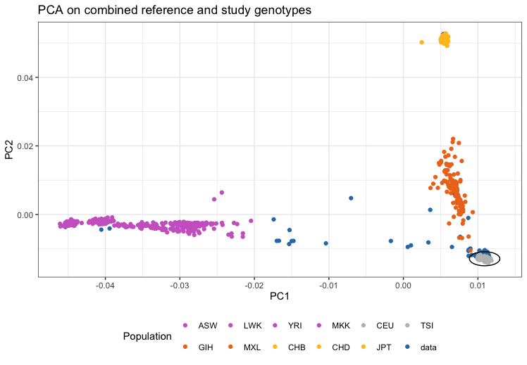

Ancestry estimation based on reference samples of known ethnicities
Maha Syed and Caroline Walter
2024-09-19
Source:vignettes/AncestryCheck.Rmd
AncestryCheck.RmdRunning Random Forest Classification
This package contains a function to predict ancestry of samples. This works through a random forest algorithm trained on the principal components of cleaned genomics data from the 1000 genomes dataset. This method is based off the ancestry identification scheme used in the Pan-UK BioBank analysis.
Plink v2 is
needed for this portion of the package. In addition, there is a data
repository containing necessary files for running the provided
pre-trained classier here: https://github.com/meyer-lab-cshl/plinkQCAncestryData/tree/main.
Git Large File Storage extention
needs to be pre-installed to get the correct files.
This can be downloaded from github with:
If the zip folder downloaded is a smaller size than the expected
251.3MB, run git lfs fetch to make sure the correct file
gets downloaded. Unzip the file for future use.
Workflow
To begin with this is an example of how to run the classifier with a provided test data set. We will set up a temporary directory for qcdir.
package.dir <- find.package('plinkQC')
indir <- file.path(package.dir, 'extdata')
qcdir <- tempdir()
name <- 'data.hg38'
path2plink2 <- "/Users/syed/bin/plink2"
path2load_mat <- "/Users/syed/Documents/loading_matrix"Before use, the study data should be in the new hg38 annotation. USCS’s liftOver tool may be needed to map variants from one annotation to another. More details on how to use the tool can be found on the processing HapMap III reference data vignette.
In addition, the data should be in PLINK 2.0 format (i.e pgen, pvar, psam files), and the variants identifiers should be formatted similar to the following example: 1:12345[hg38]. We can use the included functions convert_to_plink2() and rename_variant_identifiers() to correctly format genomic data that is in the hg38 annotation.
convert_to_plink2(indir=indir, qcdir=qcdir, name=name,
path2plink2 = path2plink2)
rename_variant_identifiers(indir=qcdir, qcdir=qcdir, name=name,
path2plink2 = path2plink2)
name <- paste0(name, ".renamed")After correctly formatting the data, we can use the provided function to return the sample ids and predicted ancestry.
ancestries <- superpop_classification(indir=qcdir, qcdir=qcdir, name=name,
path2plink2 = path2plink2,
path2load_mat = path2load_mat)
head(ancestries)Training Your Own Random Forest Classifier
Sometimes there might not be enough overlap between the SNPs in the study dataset and the trained random forest algorithm for a accurate prediction. In this case, we recommend training your own random forest. To do so, we will first need to set up the needed bash variables and download the 1000 genomes dataset into qcdir which is described in detail in Processing 1000 Genomes reference data for ancestry estimation. We will use a test study dataset included in the package as an example for the workflow.
Putting study data in qcdir
Copy your study dataset to the qcdir folder. In this example, we are assuming that the provided test dataset included with the package has been moved.
Renaming variant identifiers
Variant identifiers can vary between studies. To ensure that the data can be properly processed, we will rename the variant identifiers to a common scheme based on chromosome number and basepair location.
plink2 --bfile $qcdir/all_hg38 \
--set-all-var-ids "@:#[hg38]" \
--rm-dup exclude-all \
--make-pgen \
--out $qcdir/all_hg38.renamed
plink2 --bfile $qcdir/$name \
--set-all-var-ids "@:#[hg38]" \
--rm-dup exclude-all \
--make-pgen \
--out $qcdir/$name.renamed
mv $qcdir/all_hg38.renamed.log $qcdir/plink_log
mv $qcdir/$name.renamed.log $qcdir/plink_logFiltering out the shared SNPs between the study dataset and reference 1000G dataset
cd $qcdir
awk '{print $3}' $name.pvar > $name.varids.txt
plink2 --pfile all_hg38 --keep $name.varids.txt --make-pgen --out filtered_hg38Then, we will remove variants with a low minor allele count with the –maf function of plink 2.
plink2 --pfile $qcdir/filtered_hg38\
--maf \
--nonfounders \
--make-pgen \
--out $qcdir/filtered_hg38.mafWe will conduct principal component analysis on genetic variants that
are pruned for variants in linkage disequilibrium (LD) with an
in a 50kb window. The LD-pruned dataset is generated below, using
plink --indep-pairwise to compute the LD-variants;
additionally exclude range is used to remove genomic ranges
of known high-LD structure. This file was originally provided by [1] and is available in
file.path(find.package('plinkQC'),'extdata',' high-LD-regions-hg38-GRCh38.txt').
If there has been an update in reference data, this will need to be
updated as well.
highld='high-LD-regions-hg38-GRCh38.txt'
plink2 --pfile filtered_hg38.renamed\
--exclude range $qcdir/$highld \
--indep-pairwise 50 5 0.2 \
--out filtered_hg38.renamed
plink2 --pfile filtered_hg38.renamed \
--extract filtered_hg38.renamed.prune.in \
--make-pgen \
--out filtered_hg38.prunedAfter filtering out the low minor allele frequency and pruning, we will extract the principal components from the data.
plink2 --pfile filtered_hg38.pruned \
--nonfounders \
--freq counts \
--pca allele-wts 20 \
--out filtered_hg38.pruned.pcaAfter running a PCA, we will project the original dataset onto the principal components.
plink2 --pfile filtered_hg38.pruned
--read-freq all_hg38.pca.acount
--score all_hg38.pca.eigenvec.allele 2 6 header-read no-mean-imputation variance-standardize
--score-col-nums 7-26 --out filtered_hg38.projectionFrom this, this will be used to train the random forest algorithm in R.
library(tidyverse)
library(randomForest)
filepath <- '~/qcdir/filtered_hg38.projection.sscore'
proj <- read.csv(
file= filepath,
sep='\t', header = TRUE)
package.dir <- find.package('plinkQC')
ancestry_info <-
read_delim(file.path(package.dir,"extdata/Genomes1000_ID2Pop.txt"))
superpop <-
read_delim(file.path(package.dir,"extdata/AncestryGeoLocations.csv"))We divide up the data into a 70% training portion and 30% testing portion. To ensure a balanced model, we will sample the data to ensure an even representation of each ancestral superpopulation group in the testing portion of the data. For a roughly 70% split of the data, this is 448 samples in each of the five ancestral groups.
proj <- proj %>%
select(-c(ALLELE_CT, NAMED_ALLELE_DOSAGE_SUM))
colnames(proj) <- c("IID", paste0("PC", 1:20))
#turning ancestry info to have the superpopulation
labeled_proj <- merge(proj, superpop_id)
n_individuals <- 448
set.seed(123)
idx <- split(seq(nrow(labeled_proj)), labeled_proj$Ancestry)
train.ids <- lapply(idx, function(i) {
sample(i, n_individuals)
})
ids_to_keeps<- unlist(train.ids, use.names = FALSE, recursive = FALSE)
train_proj_1000g <- labeled_proj[ids_to_keeps,]Then, we can train the random forest.
train_proj_1000g$Ancestry <- factor(train_proj_1000g$Ancestry)
ancestry_rf <- randomForest(Ancestry ~ .,
data = train_proj_1000g[,-c(2,23)],
method = "rf",
ntree = 750,
importance = TRUE)
ancestry_rfPredicting ancestries of new study data
To predict the ancestries of a new study dataset with our trained random forest, you need to project the newdata onto the principal components of the reference dataset. This is done with the –score function in plink2. The projection is then used as an input for the random forest.
plink2 --pfile newdata
--read-freq all_hg38.pca.acount
--score all_hg38.pca.eigenvec.allele 2 6 header-read no-mean-imputation variance-standardize
--score-col-nums 7-26 --out newdata.projectionThen we can clean the data in preparation to be used for training the random forest algorithm.
Evalulating and Tuning Classification
To evaluate the accuracy of the model, a commonly used metric is the out-of-bag error rate and confusion matrix. The confusion matrix displays the number of correct classifications for each ancestry along the diagonal. Any values outside the diagonal are misclassifications for that other ancestry. A summary of these metrics can be seen through:
ancestry_rfAnd we can visualize the confusion matrix as a heatmap.
Parameter Tuning
Tuning the parameters for this random forest is crucial in building a machine-learning model to produce the best forest, in this case having the highest accuracy.
Number of Trees
A random forest model is comprised of building several trees and the ‘Number of trees’ parameter decides exactly how many decision trees will constitute the random forest. Although there exists a positive relationship between the number of trees and predictive performance of the model, there exists a point where continuing to increase the number of trees will no longer find you a better prediction while elongating computational efficiency. There also exists a tradeoff between predictive performance and computational efficiency. Excess trees also pose a possible issue of overfitting as more trees are trained. It is important for your dataset to test and find the point of diminishing returns. For the example below of the 1000 Genomes set, 500-1000 trees allows accurate predictions to be made, while also staying computationally efficient.
rf_100_trees <- randomForest(Ancestry ~ .,
data = g_1000[,-c(1,21,22)],
ntree = 100,
method = "rf",
importance = TRUE)
rf_500_trees <- randomForest(Ancestry ~ .,
data = g_1000[,-c(1,21,22)],
ntree = 500,
method = "rf",
importance = TRUE)
rf_10000_trees <- randomForest(Ancestry ~ .,
data = g_1000[,-c(1,21,22)],
ntree = 10000,
method = "rf",
mtry = best_mtry,
importance = TRUE)Mtry
The mrty parameter controls the number of variables tried at each split. During decision tree construcrion process, the confirmation that no two trees look exactly the same must be investiagted. More specifically, this mtry parameter controls the number of input features a decision tree is able to consider at any moment during tree construction and controls how much randomness is added during the process. Testing different values of mtry is crucial and can greatly impact the model’s performance. For every new split that is added as a node to a decision tree, mtry controls how many of the PC variables are allowed to be considered for each successive split.
If the value of mtry is too large and each model has access to all features as every split, there will not be as much randomness in the model and the decision trees may look very similar to each other, reducing the benefits of building multiple independent decision trees. Two common heuristics for choosing an mtry value is for the value of the parameter to either be the square root of or log base 2 of the total number of features. For the example below, those values end up being about 4.47 and 4.32, respectively; 4 was chosen to avoid the effect of a large mtry that diminishes the randomness in the model.
Here, three mtry values will be tested and the best found value will
be the one with the smallest OOB error, and will be saved into the
best_mtry variable. At each iteration, the mtry will be
inflated or deflated by the stepFactor value. The improve
specifies the relative improvement in OOB error rate must be improved by
that much for the search to continue. The trace specifies
whether to print the progress of the search, and plot says
whether to plot the OOB error as a function of mtry. We can then build
the random forest model again using the best saved mtry value.
# This first line will provide the best mtry
mtry<- tuneRF(x = g_1000[,-c(1,21,22)], y = g_1000$Ancestry,
stepFactor = 1.5, improve = 0.01, trace = TRUE, plot = TRUE)
best_mtry <- mtry[mtry[, 2] == min(mtry[, 2]), 1]
set.seed(123)
rf_mtry <- randomForest(Ancestry ~ .,
data = g_1000[,-c(1,21,22)],
mtry = best_mtry,
ntree = 1500,
method = "rf",
importance = TRUE)
rf_mtryK-fold Cross Validation
Cross-validation is used to estimate the skill of a machine learning model on unseen data. When tuning this RF model, k-fold cross validation is used to split bootstrapped datasets into random groups, holding one group as test data and training the different models (the individual decision trees) on the remaining groups, where ‘k’ is the number of folds/groups in the dataset. Using k=5 or k=10 is common and usually arbitrarily chosen, depending on the size of the dataset. A higher number of folds tends to lead to a more accurate model as you are splitting. In the example below, k=10 for 10-fold cross-validation was used, meaning there were 10 iterations of the model for each of the 500 decision trees, each using a different group as the test set and the remaining 9 groups as training data for the model. After all 10 iterations were complete, the resulting iterations are averaged to find the final cross-validation model which is our random forest model.
It is important to test different values of k as there exists a tradeoff between model accuracy and computational expense. Each iteration requires the entire model to run, so this can get very computationally expensive depending on the size of the dataset. Below is the documentation for two different values of k for k-fold cross validation.
set.seed(123)
trainControl_5 <- trainControl(method = "cv",
number = 5,
search = "grid")
forest_5 <- train(Ancestry ~ .,
data=g_1000[,-c(1,21,22)],
method = "rf",
metric = "Accuracy",
trControl = trainControl_5
)
# Print out the model details
forest_5$finalModel
# Now for 10-fold cross validation
trainControl_10 <- trainControl(method = "cv",
number = 10,
search = "grid")
forest_10 <- train(Ancestry ~ .,
data=g_1000[,-c(1,21,22)],
method = "rf",
metric = "Accuracy",
trControl = trainControl_10
)
# Print out model details
rf_10_fold_cv <- forest_10$finalModelEvaluating/Interpretting the RF
Once you have found a successful OOB error rate, you can use the below package to find out important information regarding your tree. The below documentation builds a decision tree using categorical aspects to classify the data. The PC values for each sample are provided in our 1000 Genomes reference dataset file, where each sample has values for 20 distinct PCs. We ask if a certain sample’s value for a specific PC is less than or greater than a given number. Based on that answer, it is either classified as a specific ancestry or needs to undergo more investigation to classify it correctly. For comprehensability, this is only a subset of a decision tree the random forest builds as classifying all 26 ancestries builds quite a complicated and cluttered plot.
# This is a visual of the random forest being made.
# https://github.com/araastat/reprtree
reprtree:::plot.getTree(rf_mtry)
# Two different plots
reprtree:::plot.getTree(rf_mtry, k=1, d=5)
reprtree:::plot.getTree(rf_mtry, k=1, d=6) Ancestry estimation
The identification of individuals of divergent ancestry can be achieved by combining the genotypes of the study population with genotypes of a reference dataset consisting of individuals from known ethnicities (for instance individuals from the Hapmap or 1000 genomes study [6]). Principal componeanalysis (PCA) on this combined genotype panel can then be used to detect population structure down to the level of the reference dataset (for Hapmap and 1000 Genomes, this is down to large-scale continental ancestry).
In the following, the workflow for combining a study dataset with the
reference samples, conducting PCA and estimating ancestry is
demonstrated. The study dataset consists of 200 individuals and 10,000
genetic markers and is provided with
in file.path(find.package('plinkQC'),'extdata').
Workflow
Download reference data
A suitable reference dataset should be downloaded and if necessary, re-formated into PLINK format. Vignettes ‘Processing HapMap III reference data for ancestry estimation’ and ‘Processing 1000Genomes reference data for ancestry estimation’, show the download and processing of the HapMap phase III and 1000Genomes phase III dataset, respectively. In this example, we will use the 1000Genomes data as the reference dataset.
Set-up
We will first set up some bash variables and create directories needed; storing the names and directories of the reference and study will make it easy to use updated versions of the reference or new datasets in the future. We create a directory named ‘qcdir’ for the study data. In order to keep the data directory tidy, we’ll create a directory for the log files and move them to the log directory here after each analysis step. This is useful to keep the PLINK log-files for future reference. Once you have created ‘qcdir’, be sure to copy the data.bim, data.bed, and data.fam files into your directory. If you are using HapMap III reference data, be sure to use the correct variable name; refname=‘HapMapIII’.
Match study genotypes and reference data
In order to compute joint principal components of the reference and study population, we will need to combine the two datasets. The plink –merge function enables this merge, but requires the variants in the datasets to be matching by chromosome, position and alleles. The following sections show how to extract the relevant data from the reference and study dataset and how to filter matching variants.
Filter reference and study data for non A-T or G-C SNPs
We will use an awk script to find non-A/T and non-G/C SNPs, as these SNPs are more difficult to align, and remove them from both the reference and study data sets. In addition, we will only keep the autosomes (chr 1-22), only keep snps (snps-only), of those, keep only the biallelic ones (max-alleles 2), and remove any duplicates (rm-dup).
awk 'BEGIN {OFS="\t"} ($5$6 == "GC" || $5$6 == "CG" \
|| $5$6 == "AT" || $5$6 == "TA") {print $2}' \
$qcdir/$name.bim > \
$qcdir/$name.ac_gt_snps
awk 'BEGIN {OFS="\t"} ($5$6 == "GC" || $5$6 == "CG" \
|| $5$6 == "AT" || $5$6 == "TA") {print $2}' \
$refdir/$refname.bim > \
$qcdir/$refname.ac_gt_snps
plink2 --bfile $refdir/$refname \
--rm-dup exclude-all \
--max-alleles 2 \
--snps-only just-acgt \
--exclude $qcdir/$refname.ac_gt_snps \
--chr 1-22 \
--make-bed \
--out $qcdir/$refname.no_ac_gt_snps
mv $qcdir/$refname.no_ac_gt_snps.log $qcdir/plink_log/$refname.no_ac_gt_snps.log
plink2 --bfile $qcdir/$name \
--rm-dup exclude-all \
--max-alleles 2 \
--snps-only just-acgt \
--exclude $qcdir/$name.ac_gt_snps \
--make-bed \
--chr 1-22 \
--allow-extra-chr \
--out $qcdir/$name.no_ac_gt_snps
mv $qcdir/$name.no_ac_gt_snps.log $qcdir/plink_log/$name.no_ac_gt_snps.logRename Variant Identifiers to common scheme
Variant identifiers can vary between studies and/or reference sets. For computing the genetic PC, the annotation is not important, however, merging the files via PLINK will only work for variants with perfectly matching attributes. For instance, commonly used identifiers are either rsIDs or a name constructed from chr-position-alleles. Here, we must ensure the study and reference sets use the same identifiers in order to merge them by renaming all variants using their chromosome and position, followed by the genome build. As this might introduce additional duplicates (e.g. identifiers that now are identical because of tri-allelic variants that could not be caught in the previous step), we will also remove duplicates again.
plink2 --bfile $qcdir/$name.no_ac_gt_snps \
--set-all-var-ids @:#[hg38] \
--rm-dup exclude-all \
--make-bed \
--out $qcdir/$name.renamed
mv $qcdir/$name.renamed.log $qcdir/plink_log
plink2 --bfile $qcdir/$refname.no_ac_gt_snps \
--set-all-var-ids @:#[hg38] \
--rm-dup exclude-all \
--make-bed \
--out $qcdir/$refname.renamed
mv $qcdir/$refname.renamed.log $qcdir/plink_logPrune study data
We will conduct principal component analysis on genetic variants that
are pruned for variants in linkage disequilibrium (LD) with an
in a 50kb window. The LD-pruned dataset is generated below, using
plink --indep-pairwise to compute the LD-variants;
additionally exclude range is used to remove genomic ranges
of known high-LD structure. This file was originally provided by [1] and is available in
file.path(find.package('plinkQC'),'extdata',' high-LD-regions-hg38-GRCh38.txt').
If there has been an update in reference data, this will need to be
updated as well.
Merge study genotypes and reference data
The matching study and reference dataset can now be merged into a combined dataset with plink –bmerge. If all steps outlined above were conducted successfully, no mismatch errors should occur.
plink --bfile $qcdir/$name.pruned \
--bmerge $qcdir/$refname.pruned \
--out $qcdir/$name.merge.$refname \
--merge-mode 6
mv $qcdir/$name.merge.$refname.log $qcdir/plink_log/$name.merge.$refname.missnp.log
plink --bfile $qcdir/$name.pruned \
--bmerge $qcdir/$refname.pruned \
--exclude $qcdir/$name.merge.$refname.missnp \
--make-bed \
--out $qcdir/$name.merge.$refname
mv $qcdir/$name.merge.$refname.log $qcdir/plink_logPCA on the merged data
We can now run principal component analysis on the combined dataset
using plink --pca which returns a .eigenvec file with the
family and individual ID in columns 1 and 2, followed by the first 20
principal components.
Check ancestry
We can use the .eigenvec file to estimate the ancestry of the study
samples. Identifying individuals of divergent ancestry is implemented in
check_ancestry. Currently, check ancestry only supports
automatic selection of individuals of European descent. It uses
principal components 1 and 2 to find the center of the known European
reference samples. All study samples whose Euclidean distance from the
centre falls outside the radius specified by the maximum Euclidean
distance of the reference samples multiplied by the chosen
europeanTh are considered non-European.
check_ancestry shows the result of the ancestry analysis in
a scatter plot of PC1 versus PC2, colour-coded for samples of the
reference populations and the study population. Reminder, if you are
using HapMapIII reference data, refname will be the reference name you
have used previously. Also, the files to use are “/HapMap_ID2Pop.txt”
instead of the Genomes1000_ID2Pop and “HapMap_PopColors.txt” instead of
Genomes1000_PopColors.txt.
Note: this vignette provides the 1000Genomes annotation files, or the
HapMapIII annotation files. If you choose to use either 1000Genomes or
HapMapIII reference population data, you can simply use our color
mapping files and it should work.
If not, you must provide it to the function. An example of the color
scheme for the 1000 Genomes reference data is found in
‘1000Genomes_PopColors.txt’.
From within R, run the following command to the ancestry check. This is for the 1000 Genomes Data.
library(plinkQC)
indir <- system.file("extdata", package="plinkQC")
qcdir <- "~/qcdir"
name <- 'data'
refname <- 'all_hg38'
prefixMergedDataset <- paste(name, ".", refname, sep="")
exclude_ancestry <-
evaluate_check_ancestry(indir=qcdir, name=name,
prefixMergedDataset=prefixMergedDataset,
refSamplesFile=paste(indir,
"/Genomes1000_ID2Pop.txt",
sep=""),
refColorsFile=paste(indir,
"/Genomes1000_PopColors.txt",
sep=""),
interactive=TRUE)
After these steps, this .eigenvec file can be used to build a random
forest.
The steps for this process are described in [link next vignette]. For
now, I am putting the Random Forest documentation here.
Random Forest Classification
The previous Ancestry estimation vignette performed PCA from the combined study and reference dataset and identified individuals of European descent based on clustering of data in the first and second PC space. In this two dimensional space, there is no adequate identification of individuals of other ancestries. In this vignette, we will train a random forest classifier that uses up to 20 PCs to sufficiently estimate the study samples’ ancestry based on any ancestry in the reference dataset.
We use the .eigenvec file that was created when preparing files for ancestry estimation, and read in its dataframe. The file contains the eigenvectors for the PCA on the LD-pruned genotype data. The .eigenvec file only included the eigenvalues per PC for each individual and did not include any information regarding individual’s ancestries. Therefore, the file available in the plinkQC download, which contains a dataframe with each individual’s ID, their family ID, and their associated ancestry must be obtained and read in, as obtained from the 1000 Genomes database. These two files are to be joined by ID and filtered to remove any IDs where no genetic data were available.
The file paths must change!!!
Definitely do not need all of these:
library(plinkQC)
library(readr)
library(dplyr)
library(ggplot2)
library(randomForest)
require(caTools)
library(caret)
library(tidyverse)
library(pipeR)
library(rlist)Here, we will read in both files with corresponding data frames.
# Read in both data frames
g_1000 <- read_delim('~/Ancestry/build_forest/train_data', col_names = FALSE)
ancestry_info <- read_delim("~/Ancestry/build_forest/Genomes1000_ID2Pop.txt")The PC, training data, and ancestry files are correctly formatted, the ancestry file is filtered to remove IDs that have no corresponding genetic data, and the files are then joined by ID.
g_1000 <- g_1000 %>%
select(-X1)
colnames(g_1000) <- c("ID", paste0("PC", 1:20))
colnames(ancestry_info) <- c("Fam_ID", "ID", "Ancestry")
ancestry_info <- ancestry_info %>% filter(ancestry_info$ID %in% g_1000$ID)
g_1000 <- g_1000 %>%
left_join(ancestry_info)The documentation below provides visuals of ancestry data for your
understanding by making a histogram, hist, of individuals
per ancestry in our data set. In a random forest classification, the
original data set is split into training and testing subsets. Below, 20
individuals from each ancestry are chosen at random to avoid any under
or over representation on one ancestry during this split, shown in
test_hist. These 20 individuals are then saved and removed
from the data set to create two distinct sets, and the ancestries are
converted into a factor instead of a categorical value.
ancestries <- as.factor(g_1000$Ancestry)
hist <- ggplot(data.frame(ancestries), aes(x = ancestries)) + geom_bar()
# Sample 20 ancestry sepcific individuals
n_individuals <- 20
set.seed(123)
idx <- split(seq(nrow(ancestry_info)), ancestry_info$Ancestry)
# I changed this to use g_1000 instead of ancestry_info, because ancestry_info
# was creating samples that were above the 2584 samples that are in g_1000
test.ids <- lapply(idx, function(i) {
sample(i, n_individuals)
})
# For each population, it extracts the ids that were sampled above
ancestry.test <- ancestry_info$Ancestry[unlist(test.ids)]
# Histogram of testing set to show sampling was successful.
test_hist <- ggplot(data.frame(ancestry.test), aes(x = ancestry.test)) + geom_bar()
# Remove the `test.ids` from `g_1000` and `ancestry_info` data objects.
ids_to_remove <- unlist(test.ids, use.names = FALSE, recursive = FALSE)
g_1000 <- g_1000[-ids_to_remove,]
ancestry_info <- ancestry_info[-ids_to_remove,]
# Covert Ancestry value to a factor instead of categorical value.
g_1000$Ancestry <- factor(g_1000$Ancestry)Now that the files are correctly formatted, we are able to run a random forest classification on out Ancestry data object. The documentation is below.
rf <- randomForest(Ancestry ~ .,
data = g_1000[,-c(1,21,22)],
method = "rf",
ntree = 750,
importance = TRUE)
rfBelow provides documentation for a heatmap of the ancestries.
From the heatmap, you may see that there are some false estimations. The
next section will allow us to tune the random forest in an attempt to
improve accuracy.
my_rf <- rf$confusion
heatmap(my_rf[,-c(27)], scale = 'column', trace = 'none')Parameter Tuning
Tuning the parameters for this random forest is crucial in building a machine-learning model to produce the best forest, in this case having the highest accuracy.
Number of Trees
A random forest model is comprised of building several trees and the ‘Number of trees’ parameter decides exactly how many decision trees will constitute the random forest. Although there exists a positive relationship between the number of trees and predictive performance of the model, there exists a point where continuing to increase the number of trees will no longer find you a better prediction while elongating computational efficiency. There also exists a tradeoff between predictive performance and computational efficiency. Excess trees also pose a possible issue of overfitting as more trees are trained. It is important for your dataset to test and find the point of diminishing returns. For the example below of the 1000 Genomes set, 500-1000 trees allows accurate predictions to be made, while also staying computationally efficient.
rf_100_trees <- randomForest(Ancestry ~ .,
data = g_1000[,-c(1,21,22)],
ntree = 100,
method = "rf",
importance = TRUE)
rf_500_trees <- randomForest(Ancestry ~ .,
data = g_1000[,-c(1,21,22)],
ntree = 500,
method = "rf",
importance = TRUE)
rf_10000_trees <- randomForest(Ancestry ~ .,
data = g_1000[,-c(1,21,22)],
ntree = 10000,
method = "rf",
mtry = best_mtry,
importance = TRUE)Mtry
The mrty parameter controls the number of variables tried at each split. During decision tree construcrion process, the confirmation that no two trees look exactly the same must be investiagted. More specifically, this mtry parameter controls the number of input features a decision tree is able to consider at any moment during tree construction and controls how much randomness is added during the process. Testing different values of mtry is crucial and can greatly impact the model’s performance. For every new split that is added as a node to a decision tree, mtry controls how many of the PC variables are allowed to be considered for each successive split.
If the value of mtry is too large and each model has access to all features as every split, there will not be as much randomness in the model and the decision trees may look very similar to each other, reducing the benefits of building multiple independent decision trees. Two common heuristics for choosing an mtry value is for the value of the parameter to either be the square root of or log base 2 of the total number of features. For the example below, those values end up being about 4.47 and 4.32, respectively; 4 was chosen to avoid the effect of a large mtry that diminishes the randomness in the model.
Here, three mtry values will be tested and the best found value will
be the one with the smallest OOB error, and will be saved into the
best_mtry variable. At each iteration, the mtry will be
inflated or deflated by the stepFactor value. The improve
specifies the relative improvement in OOB error rate must be improved by
that much for the search to continue. The trace specifies
whether to print the progress of the search, and plot says
whether to plot the OOB error as a function of mtry. We can then build
the random forest model again using the best saved mtry value.
# This first line will provide the best mtry
mtry<- tuneRF(x = g_1000[,-c(1,21,22)], y = g_1000$Ancestry,
stepFactor = 1.5, improve = 0.01, trace = TRUE, plot = TRUE)
best_mtry <- mtry[mtry[, 2] == min(mtry[, 2]), 1]
set.seed(123)
rf_mtry <- randomForest(Ancestry ~ .,
data = g_1000[,-c(1,21,22)],
mtry = best_mtry,
ntree = 1500,
method = "rf",
importance = TRUE)
rf_mtryK-fold Cross Validation
Cross-validation is used to estimate the skill of a machine learning model on unseen data. When tuning this RF model, k-fold cross validation is used to split bootstrapped datasets into random groups, holding one group as test data and training the different models (the individual decision trees) on the remaining groups, where ‘k’ is the number of folds/groups in the dataset. Using k=5 or k=10 is common and usually arbitrarily chosen, depending on the size of the dataset. A higher number of folds tends to lead to a more accurate model as you are splitting. In the example below, k=10 for 10-fold cross-validation was used, meaning there were 10 iterations of the model for each of the 500 decision trees, each using a different group as the test set and the remaining 9 groups as training data for the model. After all 10 iterations were complete, the resulting iterations are averaged to find the final cross-validation model which is our random forest model.
It is important to test different values of k as there exists a tradeoff between model accuracy and computational expense. Each iteration requires the entire model to run, so this can get very computationally expensive depending on the size of the dataset. Below is the documentation for two different values of k for k-fold cross validation.
set.seed(123)
trainControl_5 <- trainControl(method = "cv",
number = 5,
search = "grid")
forest_5 <- train(Ancestry ~ .,
data=g_1000[,-c(1,21,22)],
method = "rf",
metric = "Accuracy",
trControl = trainControl_5
)
# Print out the model details
forest_5$finalModel
# Now for 10-fold cross validation
trainControl_10 <- trainControl(method = "cv",
number = 10,
search = "grid")
forest_10 <- train(Ancestry ~ .,
data=g_1000[,-c(1,21,22)],
method = "rf",
metric = "Accuracy",
trControl = trainControl_10
)
# Print out model details
rf_10_fold_cv <- forest_10$finalModelEvaluating/Interpretting the RF
Once you have found a successful OOB error rate, you can use the below package to find out important information regarding your tree. The below documentation builds a decision tree using categorical aspects to classify the data. The PC values for each sample are provided in our 1000 Genomes reference dataset file, where each sample has values for 20 distinct PCs. We ask if a certain sample’s value for a specific PC is less than or greater than a given numer. Based on that answer, it is either classified as a specific ancestry or needs to undergo more investigation to classify it correctly. For comprehensability, this is only a subset of a decision tree the random forest builds as classifying all 26 ancestries builds quite a complicated and cluttered plot.
# This is a visual of the random forest being made.
# https://github.com/araastat/reprtree
reprtree:::plot.getTree(rf_mtry)
# Two different plots
reprtree:::plot.getTree(rf_mtry, k=1, d=5)
reprtree:::plot.getTree(rf_mtry, k=1, d=6) Making a random forest to classify superpopulation
g_1000 <- read_delim('~/Ancestry/build_forest/train_data', col_names = FALSE)
ancestry_info <- read_delim("~/Ancestry/build_forest/Genomes1000_ID2Pop.txt")
broader_ancestries <- read_delim("~/Ancestry/build_forest/AncestryGeoLocations.csv")
# This line below is for the map construction visual
broader_ancestries$latitude <- as.numeric(as.character(broader_ancestries$latitude))
g_1000 <- g_1000 %>%
select(-X1)
colnames(g_1000) <- c("ID", paste0("PC", 1:20))
colnames(ancestry_info) <- c("Fam_ID", "ID", "Ancestry")
ancestry_info <- ancestry_info %>% filter(ancestry_info$ID %in% g_1000$ID)
g_1000 <- g_1000 %>% #t raining data
left_join(ancestry_info)
# These are again for the map construction - but also useful in building rf for superpopulation
df_superpop <- g_1000 %>%
right_join(broader_ancestries, by=c("Ancestry"))
df_superpop$superpopulation <- as.factor(df_superpop$superpopulation)
# Ignore - this needs to be fixed
rf_superpop <- randomForest(superpopulation ~ .,
data = df2[,-c(1, 22, 23, 24, 25, 26, 27, 29)],
method = "rf",
importance = TRUE)More Plots and Visuals of the data
This is more information on building some of the useful visuals/plots that show the data objects and sets we are working with. ### 1000 Genomes Population Database on Map
## This portion is the documentation for the map visual in Figure 1 of my thesis.
install.packages("rnaturalearthdata")
install.packages("sf")
library(dplyr)
library("tidyverse")
library("sf")
library("rnaturalearth")
library("RColorBrewer")
library("rnaturalearthdata")
g_1000 <- read_delim('~/Ancestry/build_forest/train_data', col_names = FALSE)
ancestry_info <- read_delim("~/Ancestry/build_forest/Genomes1000_ID2Pop.txt")
broader_ancestries <- read_delim("~/Ancestry/build_forest/AncestryGeoLocations.csv")
broader_ancestries$latitude <- as.numeric(as.character(broader_ancestries$latitude))
g_1000 <- g_1000 %>%
select(-X1)
colnames(g_1000) <- c("ID", paste0("PC", 1:20))
colnames(ancestry_info) <- c("Fam_ID", "ID", "Ancestry")
ancestry_info <- ancestry_info %>% filter(ancestry_info$ID %in% g_1000$ID)
g_1000 <- g_1000 %>% #training data
left_join(ancestry_info)
df2 <- g_1000 %>%
right_join(broader_ancestries, by=c("Ancestry"))
df2 <- df2 %>%
select(-PC1, -PC2, -PC3, -PC4, -PC5, -PC6, -PC7, -PC8, -PC9, -PC10, -PC11,
-PC12, -PC13, -PC14, -PC15, -PC16, -PC17, -PC18, -PC19, -PC20)
world <- ne_countries(scale = "medium", returnclass = "sf")
g <- ggplot()
g + geom_sf(data = world) +
geom_point(data = df2, aes(x = longitude, y=latitude, color = superpopulation)) +
scale_color_brewer(type="qual", palette = "Set3")
g + geom_sf(data = world) +
geom_point(data = df2, aes(x = longitude, y=latitude, color = Ancestry)) +
scale_color_brewer(type="qual", palette = "Set3")library(pheatmap)
install.packages("pheatmap")
confusion_mat <- (rf_mtry$confusion[,-c(27)])